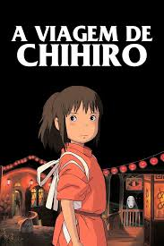
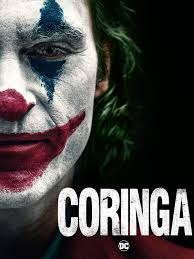
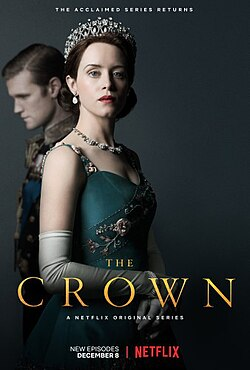

Meus filmes favoritos
Spirited Away (A Viagem de Chihiro)
 Ver TrailerSinopse: Quando a jovem Chihiro e seus pais se perdem e encontram uma cidade misteriosa, ela acaba sendo aprisionada em um mundo mágico cheio de deuses, espíritos e criaturas fantásticas. Para resgatar seus pais e escapar, Chihiro precisa trabalhar na casa de banhos de uma bruxa chamada Yubaba.
Opinião: "A Viagem de Chihiro" é uma obra-prima do Studio Ghibli. Cada cena é deslumbrante, e a história é repleta de lições sobre coragem, amizade e maturidade. O filme é uma experiência visual e emocional inesquecível, com personagens que tocam o coração do espectador.
Coringa (2018)
 Ver TrailerSinopse: Arthur Fleck, um comediante fracassado, sofre com uma vida repleta de rejeições e violência, o que o leva a se transformar no vilão Coringa. A história explora a luta de Fleck com sua sanidade e o impacto da sociedade em sua descida ao caos.
Opinião: "Coringa" é um estudo psicológico profundo de um homem quebrado pela sociedade. Joaquin Phoenix entrega uma performance excepcional, capaz de capturar toda a dor e raiva de seu personagem. O filme é sombrio e perturbador, mas também fascinante e essencial para quem gosta de um drama psicológico intenso.
No Limite do Amanhã (Edge of Tomorrow)
 Ver Trailer
Ver Trailer
Sinopse: O soldado Cage é forçado a reviver o mesmo dia de batalha contra uma invasão alienígena, morrendo a cada repetição. Com a ajuda de uma combatente experiente, ele deve encontrar uma maneira de usar esse ciclo temporal a seu favor para salvar a humanidade.
Opinião: "No Limite do Amanhã" é uma mistura envolvente de ficção científica e ação, com uma narrativa criativa e dinâmica. Tom Cruise e Emily Blunt têm uma química impressionante, e o conceito de repetição de tempo é explorado de maneira única e divertida.
O Iluminado (The Shining)
.jpg) Ver Trailer
Ver Trailer
Sinopse: Jack Torrance, um escritor em busca de recuperação, aceita um emprego como zelador de um hotel isolado nas montanhas. Durante o inverno, ele, sua esposa Wendy e seu filho Danny começam a ser aterrorizados pelas forças sobrenaturais do hotel.
Opinião: "O Iluminado" é um dos maiores clássicos do terror psicológico, com uma direção impecável de Stanley Kubrick e uma performance memorável de Jack Nicholson. O clima de tensão crescente e a exploração da loucura humana fazem deste filme uma experiência única.
Minhas Séries Favoritas
Stranger Things

Sinopse: Um grupo de crianças se une para investigar o desaparecimento de um amigo, revelando um mundo paralelo e uma série de mistérios sobrenaturais. A série mistura mistério, suspense e elementos de ficção científica dos anos 80.
Opinião: "Stranger Things" é uma das séries mais cativantes da década. Com personagens memoráveis, uma trama envolvente e uma ótima nostalgia dos anos 80, ela é um prato cheio para quem gosta de mistério e ficção científica.
Breaking Bad

Sinopse: Walter White, um professor de química que se torna traficante de metanfetamina após ser diagnosticado com câncer terminal, começa uma jornada moralmente questionável, tentando garantir o futuro financeiro de sua família.
Opinião: "Breaking Bad" é uma obra-prima da televisão, com uma narrativa intensa e personagens complexos. A transformação de Walter White é uma das mais impressionantes da TV, e a série mantém o espectador preso do início ao fim.
The Crown
Sinopse: A série acompanha a vida da Rainha Elizabeth II desde sua ascensão ao trono até os eventos históricos que marcaram o século 20. Uma reflexão sobre poder, responsabilidade e os desafios pessoais de uma monarca.
Opinião: "The Crown" é uma série fascinante que mistura drama e história, com atuações de tirar o fôlego. A série mergulha na complexidade da vida real da monarquia britânica e traz à tona questões políticas e pessoais profundas.
The Witcher

Sinopse: Geralt de Rívia, um caçador de monstros, se vê em meio a intrigas políticas e mágicas enquanto luta para proteger os inocentes e encontrar o seu lugar em um mundo violento e cruel.
Opinião: "The Witcher" é uma série envolvente com uma trama cheia de ação e mistério, baseada nos livros de Andrzej Sapkowski. A série tem uma ótima direção de arte e um elenco talentoso, além de um mundo cheio de fantasia e mitologia.